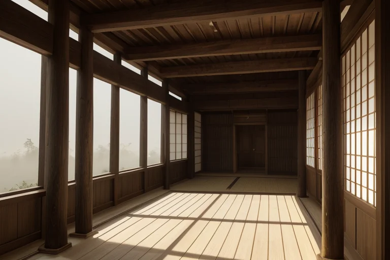
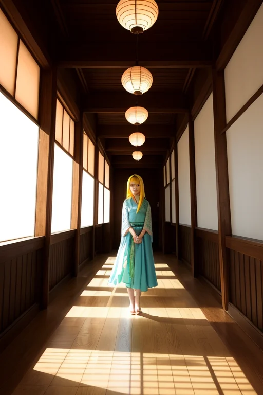

第一章 現実の岡山
あなたはまだ気づいていない。この土地にも、王がいることを。
吉備津神社の長い回廊を、足音一つ立てずに歩く者がいた。その姿は、ただの観光客のようにも、地元の老人のようにも見える。彼の名はオカヤマリア・クリア。歪みの列島を守る四十七人の王の一人であり、ここ岡山の静律を司る者だ。彼の目には、この土地の「歪み」が、ごく淡い灰色の靄のように見えている。それは、大地の深いところで蓄積される、ごくわずかなストレス。彼の仕事は、それを「整える」ことだ。整然と並ぶ回廊の柱、規則正しい檜皮葺の屋根。すべてが均整と静寂の中にある。ここには、整うことの安心感が満ちている。
だが、王は思う。この完璧なまでの均整は、果たして幸福なのか。歪みのない世界は、本当に人を幸せにするのか。彼はまだ、その答えを持たない。

第二章 歪みの兆候
吉備津神社の長い回廊を、祈りの声が静かに流れる。初詣の参拝者たちが、それぞれの願いを捧げている。その声、その思いは、王の目には微かな光の粒として映る。通常、それらは均一なリズムで揺らめき、土地の安定に寄与する。しかし今日、幾つかの光粒が、明らかに乱れていた。焦りのような鋭い輝き、諦めに似た沈んだ色。それは、人々の心の「歪み」が、祈りという形で可視化されたものだった。
王は、回廊の影に立って、その乱れをただ見つめていた。彼の役目は、物理的な地殻の歪みを整えることだ。人の心のざわめきは、調整の対象外である。それでも、その不協和音が、彼の内側に、これまでにない「もやもや」とした感覚を生み出していた。整えられた静寂の中に、かすかな亀裂が走るような。この神社の均整のとれた建築美が、かえって人々の心の不均質を際立たせているように思えてならなかった。
「整うこと」がこの土地の理想であるなら、なぜ人の心は、そう簡単には整わないのか。王は、自らに湧いたその疑問を、まだ言葉にできずにいた。
第三章 王の葛藤
吉備津神社の長い廻廊を、王は一人で歩いた。足音は吸い込まれるように消え、静寂だけが彼を取り巻く。均整のとれた柱の列、一定の間隔で落ちる影。すべてが計算され、安定している。これが彼の王国の理想形だった。
しかし、先ほどの老夫婦の会話が、耳の奥で繰り返される。「あの子は、東京で、うまくやっているのかしら」。心配という名の歪み。愛ゆえの不安定。それは、地震の歪みよりも、はるかに複雑で、王の調整の及ばない領域だった。
「整うことは幸福か」。
廻廊の終点、拝殿の前に立つ。そこには、巨大な注連縄が、完璧な弧を描いて掛かっている。力学的に、最も安定した形。彼はその形を、千年以上、この土地の歪みを調整する際の基準としてきた。地上のすべてを、あの注連縄の弧のように、無理のない安定した状態に導くこと。それが彼の使命だと思っていた。
だが今、彼は疑う。あの弧の内側に収まらないもの、均整を乱すものこそが、人間の「生きている」証なのではないか。彼の内側で、初めて生まれたこの疑念は、静寂を破る鋭い刃のように、彼自身の存在の核を揺さぶり始めていた。
第四章 妖精との対話
「王様、あなたは揺らいでいますね」
妖精クリアナの声は、後楽園の池に落ちる一滴の水音のように澄んでいた。彼女は王の傍らに座り、整然と刈り込まれた芝生を見つめていた。
「私たちの祈りは、形を整えるためだけのものではありません。魂の安定を願うものです。歪みを調整し、形を整えることは、そのための器を作る行為。器が安定していれば、中に宿る魂も、安心して揺れることができる」
王は黙ったまま、備前焼の水指を手に取った。釉薬をかけず、窯の火と灰が生み出す偶然の景色。均整の取れた形の中に、予測不能な模様が広がっている。
「整うことは、自由を奪うことでしょうか」王は呟く。
「いいえ。整うことは、自由の土台を与えることだと思います。土台がなければ、人はどこにも立てない。ただ……土台の上に、何を築くかは、私たちの祈りでは決められません」
クリアナの言葉は、静かな確信に満ちていた。彼女は、この土地の晴天のように、疑いの雲一つない存在だった。王は、その確信と、自分の中に生まれた曇りとの対比に、かすかな痛みを覚えた。
第五章 微調整と余韻
吉備津神社の鳴釜神事が静かに執り行われていた。釜の音は、地中の微細な歪みを可聴域に変換する、この土地固有の調整装置である。オカヤマリア・クリアは、その音の波紋を精神で受け止め、瀬戸内海を伝わるプレートの軋みを、ごくわずかに整える。揺れそのものを消すことはできない。ただ、その伝わり方を、神社の杉の木が風に揺れるような、自然なリズムに微調整するだけだ。
「整うことは幸福か」
かつての問いは、今は祈りに変わっていた。均整は目的ではなく、土台である。備前焼の窯変のように、均一な土台の上にこそ、予期せぬ美しい偶然が生まれる余地が残される。彼は感情を進化させた王として、その「余地」を守ることを選んだ。晴天は、すべてを曝け出すが、その明るさの陰で、多様な命が息づくことを許容する。
彼の仕事は、壮大な災害劇の前ではなく、その隙間にある。一瞬の遅延、一段階の軽減、偶然の一致。それは記録にも残らず、感謝も向けられない。ただ、調整後の世界に漂う、深い静寂の余韻だけが、彼の存在の証だった。
あなたの町にも、王がいる。